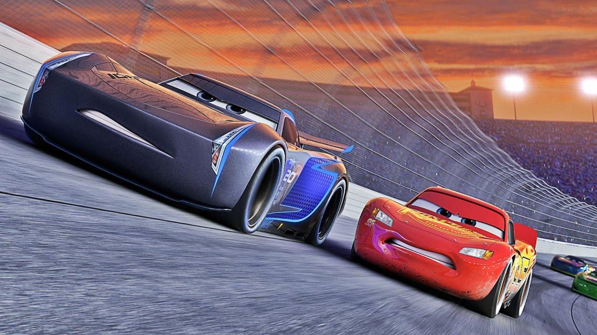

Synopsis
Six ans après les événements de Cars 2, Flash McQueen est toujours au sommet de sa carrière de coureur professionnel. Cependant, une nouvelle génération de voitures de course ultramodernes et technologiquement avancées commence à dominer le sport, menée par l'arrogant Jackson Storm.
Lors d'une course cruciale, Flash tente désespérément de rivaliser avec Storm et subit un terrible accident qui le laisse gravement endommagé. Confronté à la possibilité de devoir prendre sa retraite, Flash refuse d'abandonner et s'entraîne avec Cruz Ramirez, une jeune entraîneuse pleine d'énergie qui rêvait autrefois de devenir coureuse.
Le film explore des thèmes profonds et matures comme le vieillissement, l'acceptation du changement, la transmission du savoir et la recherche d'un nouveau but dans la vie. Flash doit décider s'il veut continuer à courir ou s'il est temps de passer le flambeau à la nouvelle génération. Ce retour aux sources rappelle l'esprit du premier film tout en apportant une conclusion émotionnelle à l'arc narratif de Flash McQueen.
Personnages principaux
Flash McQueen
Légende de la course confrontée à son âge et à une nouvelle génération de coureurs plus rapides.
Cruz Ramirez
Jeune entraîneuse énergique qui devient la protégée de Flash et découvre son propre potentiel.
Jackson Storm
Coureur de nouvelle génération arrogant, antagoniste principal qui représente l'avenir de la course.
Smokey
Ancien mécanicien de Doc Hudson qui aide Flash à retrouver sa motivation et son style.
Sterling
Propriétaire du Rust-eze Racing Center qui sponsorise Flash après son accident.
Thèmes principaux
- - L'acceptation du vieillissement et du passage du temps
- - La transmission du savoir entre générations
- - La résilience face à l'adversité et aux échecs
- - Trouver un nouveau but dans la vie après la gloire
- - L'importance du mentorat et de croire en autrui
Hommage à Doc Hudson
Cars 3 rend un hommage émouvant à Doc Hudson, le mentor de Flash dans le premier film. Après la disparition de Paul Newman, qui prêtait sa voix au personnage, le film explore l'héritage de Doc à travers des flashbacks et l'influence qu'il continue d'avoir sur Flash.
Le parallèle entre l'histoire de Doc, qui a dû arrêter sa carrière après un accident, et celle de Flash crée une profondeur émotionnelle qui résonne particulièrement avec les spectateurs qui ont grandi avec le premier film.
Succès et réception
Cars 3 a été salué comme un retour en forme après Cars 2, avec des critiques louant son ton plus mature et son retour aux thèmes du premier film. Le film a rapporté plus de 383 millions de dollars au box-office mondial.
Les critiques ont particulièrement apprécié la profondeur émotionnelle du film et son traitement sensible des thèmes du vieillissement et de la passation de flambeau. La relation mentor-élève entre Flash et Cruz a été considérée comme l'un des points forts du film.
La bande originale, incluant des chansons comme "Run That Race" et "Ride", contribue à l'atmosphère inspirante et émotionnelle du film, tout en rendant hommage à la musique country du premier volet.